ламповые огни
Новый Год близится! БУМ-БУМ-ТАРАРАХ! ТЫДЫЩ!
Товарищи! Все мы знаем, что Новый Год — это один из этих волшебных кусков пространства-времени, в который можно чудом попасть, и тогда окончательно сносит крышу: всё начинает иметь смысл и гореть тысячами огней. Попасть туда непросто — не проще, чем уловить запах озона пыльным вечером на птицефабрике имени Крупской — но при определённой сноровке и большом желании это можно.
Новый Год — это такое место типа Озера. Туда попадаешь обычно во сне, но мне вот повезло попасть по фотографии:
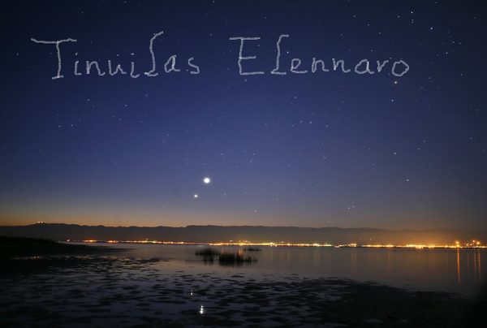
Озеро предстаёт всем по-разному. Иногда бывает тёмным:
Так вот, товарищи. Некоторые люди убедили себя, что Новый Год — это тьфу. Они надеются отсидеться в норе и преспокойно продрыхнуть весь тот небольшой, но ёмкий временной слот, в который открывается пространственно-временная дыра. А он всё равно как набросится на них!
Так что я щас припомню те новые годы, когда мне удавалось не пропустить разрыв пространства-времени и хоть ненадолго, но прочувствовать на собственной шкуре, где у этого мира правильная сторона.
***
Когда-то давным-давно я была маленькой. Бороды у меня в те годы совсем не было, да и пузо через ремень не перевисало — но в остальном мне было палец в рот не клади.
Все спали, а я бродила под ёлкой, как нолдоры по Средиземью (в те годы размеры ещё позволяли). Ёлка была огромная — верхушка её терялась в предрассветном сумраке под потолком. Она вся была живая. Где-то там внутри потрескивали огоньки, шуршали лёгкие стекляхи и топырились иголки. Маша с Аней спали — видимо, они были ещё слишком маленькие.
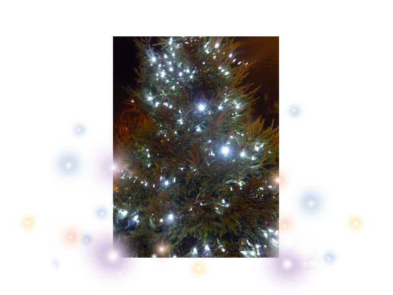
На Новый Год в наш дом съезжались со всех концов мира: Бабушка Тамара и Дедушка Иван из Серебрянки, Бабушка Альбина и Дедушка Валера из самой Москвы. Мы ездили ночью на вокзал их встречать. Эта ночь до сих пор стоит перед глазами: мы сидели на кухне, потягивали кофей и держали совет. Папа с Илюшей курили в форточку. Была зима, но никто не мёрз — среди нас не было каких-то там слабаков. Потом Илюша затоптал бычок и сказал: “ну что, поехали!”.
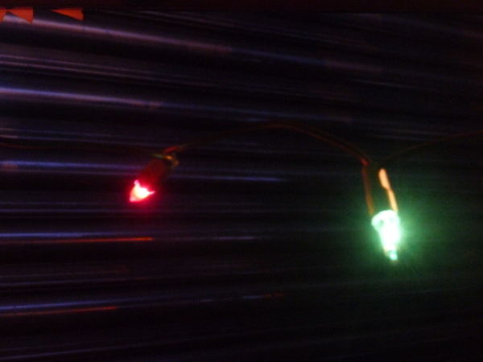
От бабушек с дедушками исходило волшебство невероятной силы — без них вообще невозможно представить себе Большой Праздник. Они сидели за столом и вели разговоры с родителями, и это было самое лучшее. Не подарки (хотя золотые монеты были ничего ;D), даже не право не спать, а именно эти вот разговоры: это были обрывки великих тайн и древней мудрости.
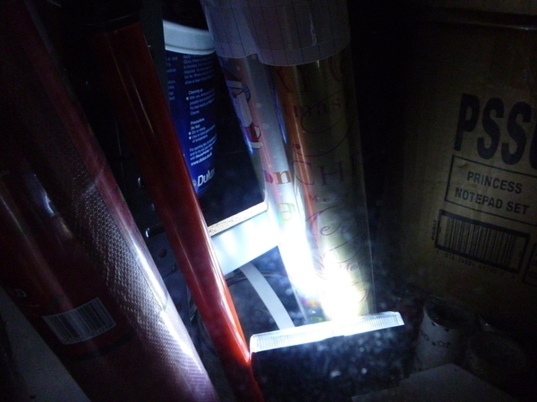
Было особенно классно насобирать каких-нибудь бутылочных пробок и коробок от конфет — это ж целый готовый строительный склад.
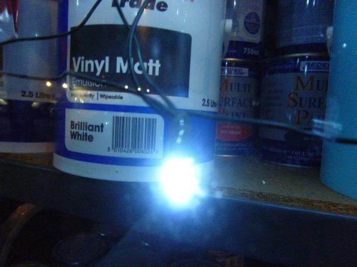
Но самая главная задача была — сделать подарок Ане. :D Конечно, Маше, маме, папе, бабушкам, дедушкам и всем другим — тоже, но тут можно было просто нарисовать открытку. А вот Ане я обычно рисовала целую книгу. :D
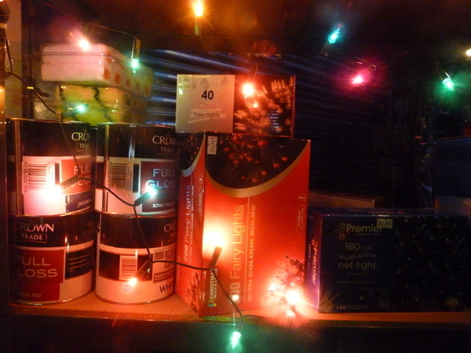
***
Где-то в начале 2000-ных всё было уже по-другому. Мир стал жестоким, тёмным местом. Жизнь — борьба, а роматика — это лампочка в подворотне:
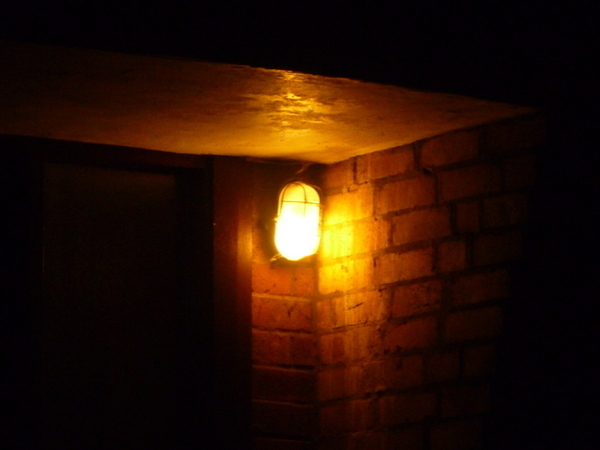
День за днём мы продирались сквозь метель: одинокие, молчаливые, с хмурой даже не улыбкой, а морщиной от улыбки.
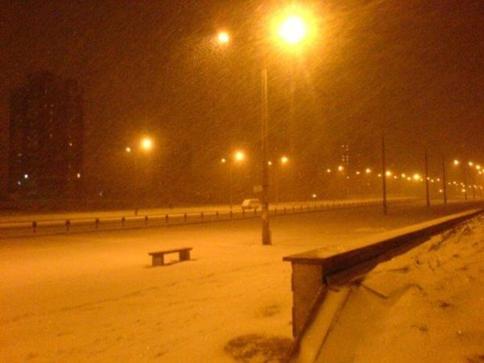
В голове всё поломалось, в душу наплевали враги, и над всем этим всходил Новый Год — неотвратимый и бессмысленный, но по-прежнему вселявший какую-то чудовищную надежду.
А на следующее утро — серое утро нового года — мы с Мариной бороздили тонкий лёд Комсомольского озера.
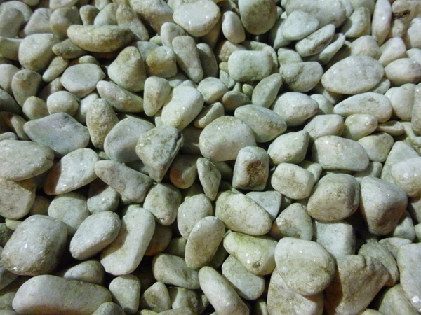
***
Как-то так получается, что всё волшебное в мире связано с людьми.
Помню один новый Год — снегу навалило по самые брови. Даже автобусы едва ходили. Весь Новый Год мы прошлялись по обледенелым улицам: ветер сдувал снег, и кроссовки предательски скользили по ледяной корке. Часов в пять утра мы-таки добрались до метро, и я чуть не заснула на ходу.
***
Вот, видите — лист. Это он блестит от застывших капель. СергейАнатольич его подобрал на дороге. Он всё время подбирает листья, а я умею только ходить из точки А в точку Б.
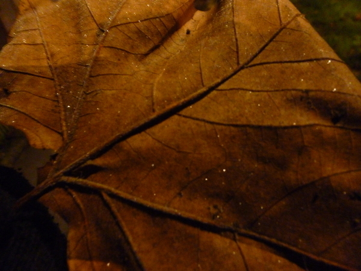
***
У нас тут сплошные огоньки и ёлки. Я хотела вам всё пофоткать, но очень плохо фоткается ночью на мыльницу. :)
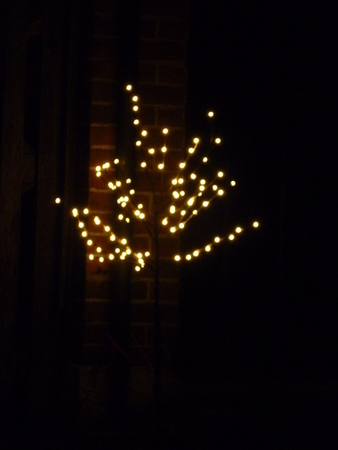
Британцы — люди щедрые. Они украшают свои дома так, чтоб всем было видно и радостно на душе. Половина придорожных кустов светится огоньками:
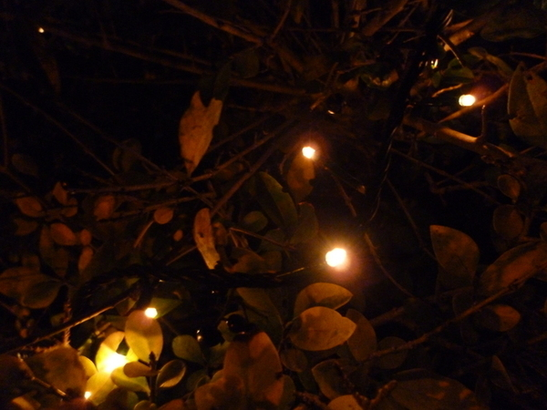
А этот куст потух, едва я начала его фоткать. :D Только одна фотка и осталась.
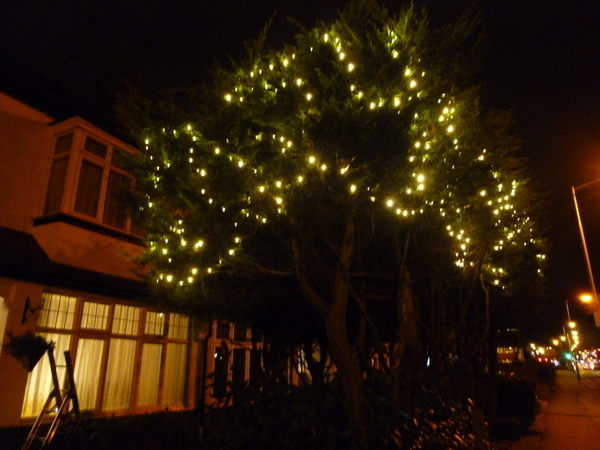
***
Так вот, братцы, вы там празднуйте Новый Год, а мы 22-го января кааак нагрянем в Минск!
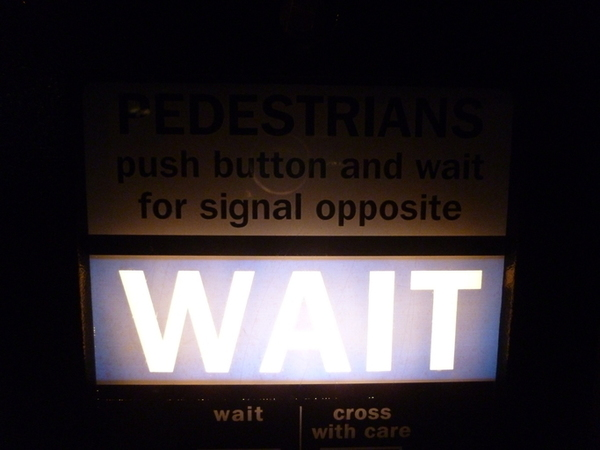
На целых две недели, о как.
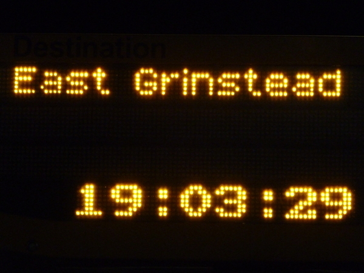
Голубая звезда Ригель осеняет поездам путь:
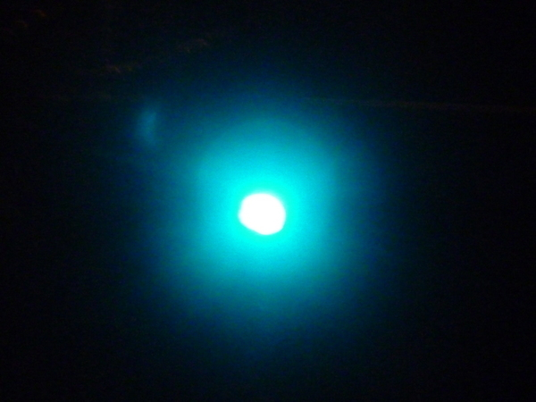
Придумывайте, что вам привезти! Если не придумаете, ей-богу, возьму сумму буков имени-фамилии по модулю трёх и привезу ароматическую свечу, напольную вазу или рамку для фотографий. :D
А напоследок — вот вам самая лучшая картинка про Новый Год. Мне её Аня нарисовала.
Смотрите там чтоб вам радостно было! :)
UPD Как-то вдруг поняла, что забыла очень важную вещь: одним из главных в любом новом году было то, как к нему готовилась мама: подарки и всякое. :)
comments powered by Disqus